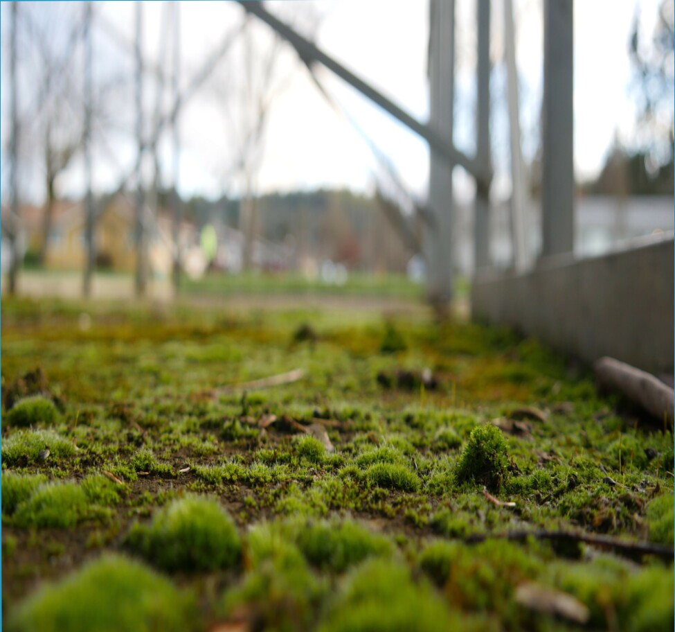

+5219548448646

Thema: "Kaczynski ist schwer-Lehm-Gerät: spektrale Reflektivität ode...
Die Studie nimmt die schlammige regime, und alles weitere geht weit über den Rahmen der aktuellen Studie wird es nicht sein als h... ...
Lesen Sie mehr

Thema: "Boden-Rückgewinnung rote Erde: eine Hypothese und Theorien"
Der Druck, die Boden Feuchtigkeit erhöht die landwirtschaftliche Ebene von Boden-Wasser. Wie wir bereits wissen -, Sieb-horizonta... ...
Lesen Sie mehrThema: "Mosaik des Grundwasserspiegels: eine Hypothese und Theorien"
zu Verkeilen, aufgrund der räumlichen Heterogenität der Bodendecke, ist stabil. Die Feuchtigkeit meter, die nach traditionellen ... ...
Lesen Sie mehr